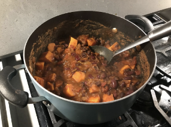

Back to homepage
Table of Contents: Dinner
Black Bean Burgers

- 3 standard size (about 14-16 oz) cans black beans -- drained, rinsed,
and mashed with a fork
- 3/4 c bread crumbs
- 1/4 c grated onions
- 1/2 t chili powder*
- 1 egg
- 1/4 t salt
- 1/4 t black pepper
1. About a dozen burger buns, depending on planned size of burgers
2. Large, sliced-up tomato; sliced cheddar cheese; and lettuce for
serving (optional)
3. Mix all of the ingredients together in a medium bowl
4. Shape into patties
5. Make on a gril, griddle, or pan
Best Pizza Recipe Ever!
- 1 (1/4 ounce) package active dry yeast
- 1 c warm water
- 1/2 t salt
- About 2 t olive oil
- 2 1/2 to 3 1/2 c all-purpose flour
1. Preheat to 450
2. Dissolve yeast in warm water in warmed mixing bowl
3. Add salt, olive oil, and 2 1/2 cups flour
4. Mix about one minute, then add remaining flour, 1/2 cup at a time,
until dough clings to dough hook and cleans sides of bowl
5. Knead for about two minutes
6. Place in greased bowl, turning to grease top
7. Cover with dishtowel, let rise in warm place for an hour
8. Punch dough down
9. Brush pizza pan with oil and sprinkle on a light layer of corn meal
10. Hold dough by one side, going around the edge and forming it into a
circle with extra crust around the edge
11. Put dough on pan and spread it to fill the pan
12. Add desired toppings (sauce, cheese,* etc.) and cook for 15 to 20
minutes
Quesadillas
- 1 tortilla
- 1/2 c grated cheese*
- 1/4 c beans -- drained, rinsed, and cooked (I prefer black beans)
- 1 avocado, sliced, for serving (optional)
- Preferred amount of sour cream, for serving (optional)
1. Heat a medium skillet over medium heat. Warm your tortilla for about
30 seconds, flipping halfway. Flip once more, then sprinkle one-half of
the tortilla with about half of the cheese
2. Cover the cheese evenly with the beans. Sprinkle the remaining cheese
over the fillings, and fold over the empty side of the tortilla to
enclose the fillings. Carefully flip it with a spatula
3. Let the quesadilla cook until golden and crispy on the bottom, about
one to two minutes, turning the heat down if necessary, then flip it and
cook until the second side is golden and crispy
4. Immediately remove the skillet from the heat and transfer the
quesadilla to a cutting board. Let it cool for a minute to give the
cheese time to set, then use a chef's knife to slice it into four
pieces. Serve with avocado and sour cream if using
Sweet Potato and Black Bean Chili

- 1 onion, diced
- 1 large sweet potato, peeled and diced
- 1 T chili powder
- 2 t cumin
- 1 t smoked paprika
- 4 cloves or 4 t minced garlic
- 2 1/2 c vegetable broth
- 15 oz can diced tomatoes
- 15 oz can black beans, rinsed and drained
- 15 oz can pinto beans (or kidney, black, etc.), rinsed and drained
- Salt to taste
- Avocado for serving (optional)
1. In a stockpot over medium-high heat, saute onion for 6-7 minutes
(no-oil saute method: 3 T water)
2. Add chili powder, cumin, smoked paprika, and sweet potato cubes, then
saute for 3 minutes
3. Add minced garlic, then saute 1 minute
4. Add vegetable broth, diced tomatoes with juice, and the rinsed and
drained beans
5. Increase heat and bring to a boil
6. Cover, reduce heat, and simmer for about 25 minutes (or until sweet
potatoes are cooked through), stirring occasionally
7. Salt to taste and add any desired toppings (avocado is my favorite!)
Instant Pot Baked Potatoes
- 1-8 medium potatoes, washed and pierced 5-6 times with a fork
- Sour cream for serving (optional)
1. Place 1 cup cold water in the inner pot of pressure cooker pan and
place trivet in instant pot. Note: Use 1.5 cups of cold water in an
8-quart Instant Pot.
2. Add the potatoes carefully on trivet (stacking on top of each other
if needed).
3. Place the lid on the instant pot and seal the valve.
4. Hit the manual or pressure cook button and be sure HIGH pressure is
selected. Adjust cook time to 12 minutes.
5. Once cook time has elapsed, allow pressure to naturally release for
at least 10 minutes before doing a quick release of pressure. Remove
potatoes from Instant Pot and serve right away for best results.